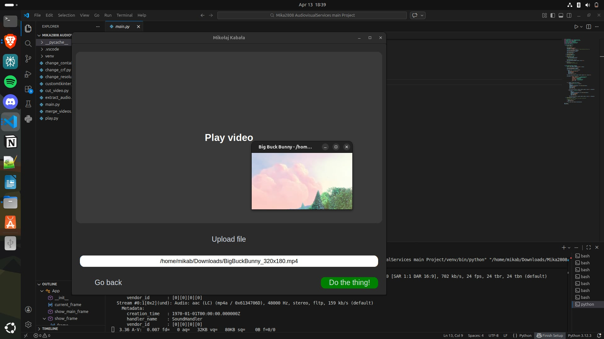
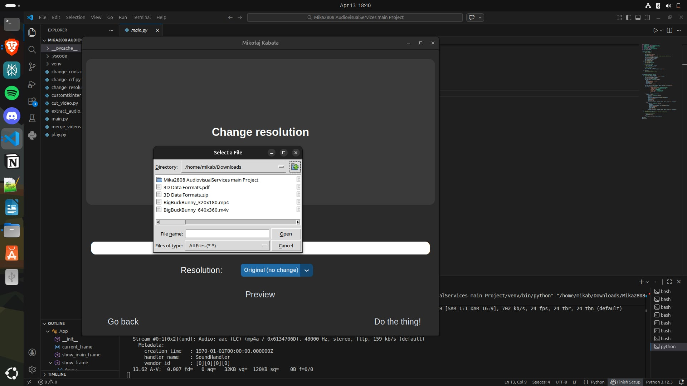

FFMPEG
A graphical user interface for FFMPEG that simplifies video and audio processing tasks such as conversion, trimming, and extraction without requiring command-line knowledge.
Background
FFMPEG is a powerful command-line tool for processing audio and video files. Despite its versatility, it requires familiarity with terminal commands and syntax, which can be challenging for non-technical users. The goal of this project was to simplify access to FFMPEG by creating a user-friendly graphical interface that enables users to perform common multimedia tasks without using the command line.
The application provides an intuitive GUI that allows users to convert video formats, extract audio, and trim media files using simple controls such as buttons and dropdown menus. The project focuses on improving usability and accessibility while maintaining compatibility across different operating systems, including Windows and Linux. The interface was built using Python and the customtkinter library.
The first image shows the home page, where all available features of the application can be seen.
Technologies: Python, FFMPEG, customtkinter
Image Gallery

Playing video
Choosing file